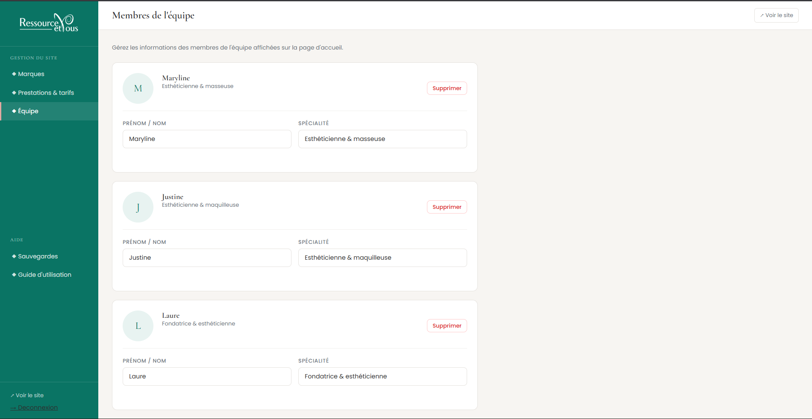
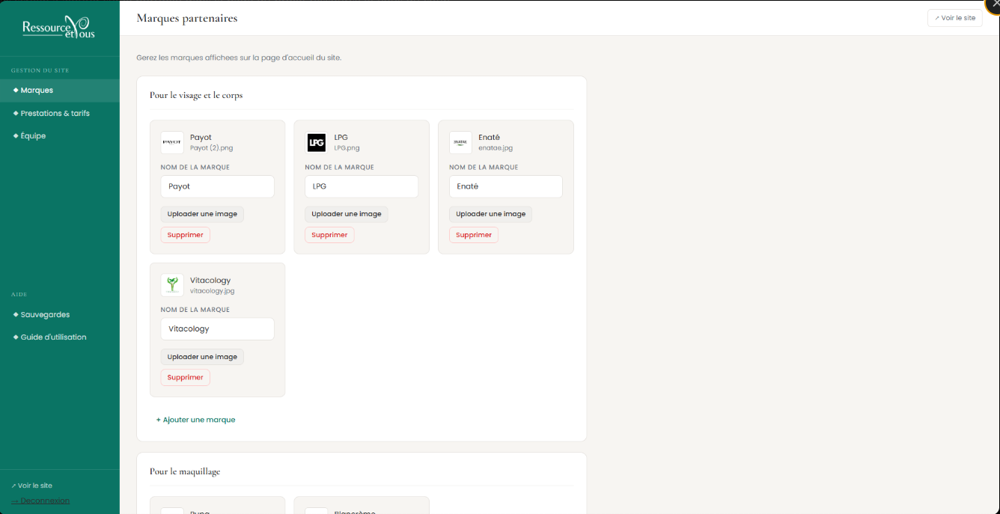
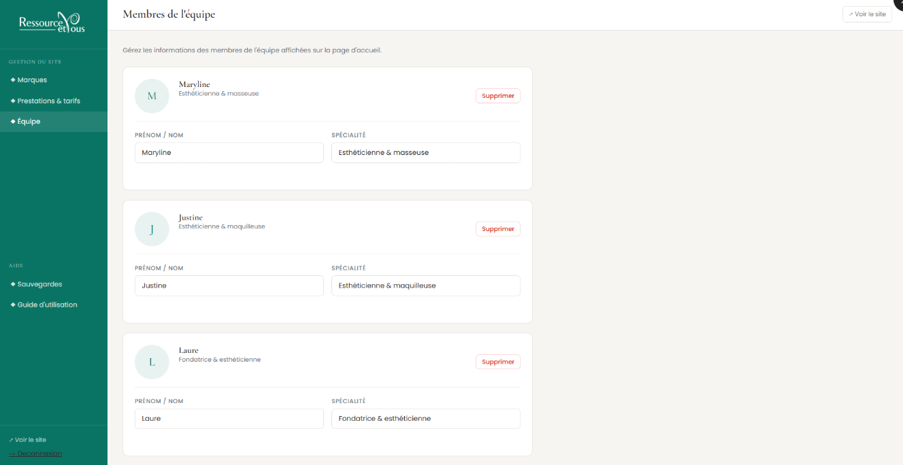

Ressourcez-vous est le site vitrine d'une esthéticienne indépendante. Le besoin : un site professionnel qu'elle gère seule — modifier ses tarifs, ajouter des catégories de prestations, mettre à jour son équipe — sans passer par moi.
Le CMS choisi est Craft CMS 5 (pas WordPress — admin plus propre,
modèles de contenu flexibles, meilleures performances). Mais l'admin natif de Craft est
trop technique pour une cliente non-dev. J'ai donc construit un panel d'administration
100% custom par-dessus, accessible sur /gestion — avec son propre
design, son propre système d'auth, et une interface pensée pour quelqu'un qui n'est pas développeur.
L'admin est un module Craft PHP (GestionModule) avec un controller dédié (AdminController). Il ne dépend d'aucun plugin du marketplace — chaque fonctionnalité est écrite à la main.
Chaque mécanisme de sécurité est implémenté manuellement en PHP natif. L'authentification est vérifiée à 3 niveaux — si un niveau est contourné, les deux autres bloquent.
La cliente a un CRUD complet sur trois types de contenu. Quand elle crée une nouvelle catégorie de prestations, une page publique est automatiquement générée avec sa propre route — sans intervention technique.
Chaque sauvegarde de contenu déclenche un backup JSON automatique. La cliente peut restaurer n'importe quel état précédent sans assistance.



Pour une praticienne qui dépend du référencement local, le SEO n'est pas une option.